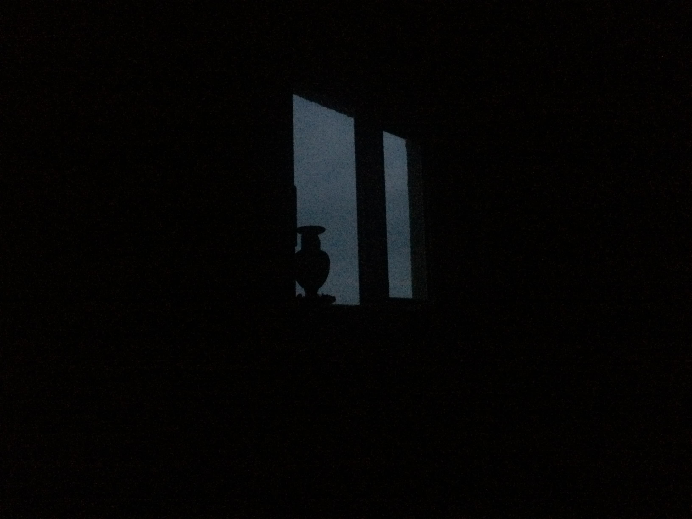

The Ramblings
of
Mr. Nobody
May 16th, 2020: Opening.
The Blog
You'll find songs, thought-vomits, poems, scientific articles, pictures, philosophical ramblings. It may seem more than one person is writing, sometimes contradicting themselves. That's how it is.
Do I contradict myself?
Very well, then I contradict
myself,
I am
large, I contain multitudes.
Song Of Myself, 51,
Leaves of Grass.
Walt Whitman.
The Person
My name is Santiago Miranda. It doesn't differs from Mr. Nobody.
These days I've been travelling (not right now as per C-19). This is a good opportunity for reborns. When we arrive to a new place nobody knows us, then we can be whatever we want. Mr. Nobody is addicted to it. (Apologizes if I mix first and third person, sometimes I find it easier to take distance of the first person when writing or even when speaking.) I don't practize this reborns as intensely as I dream of, but it's getting closer with time.
But, but what's the point of it pal?
It is to understand what life is. For me, life is a moving marvel that must be seen from different angles to get a deeper understanding of it. [And we never get it all.] Every reborn opens up a new world of possibility, another door is open in the endless corridor.
I am an experiment; mixing myself with new cultures, ideas, rituals to see what emerges, what shows up. And I like it.
Why not to use your real name then?
Mr Nobody is not just me. It's a very common mindset and way of being from this times. With some variation, of course. Mr Nobody has troubles to understand Why life is as it is?, Why did it all start, Why there is so much suffering. They are spectators rather than actors, they live in the shade, away from curious eyes, more than in visible areas.
This is a bit off here. It's here though. There is a key test for Mr Nobody's detection. Do you take yourself seriously?
New Posts